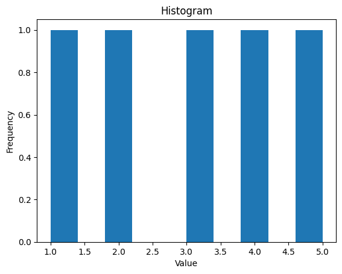
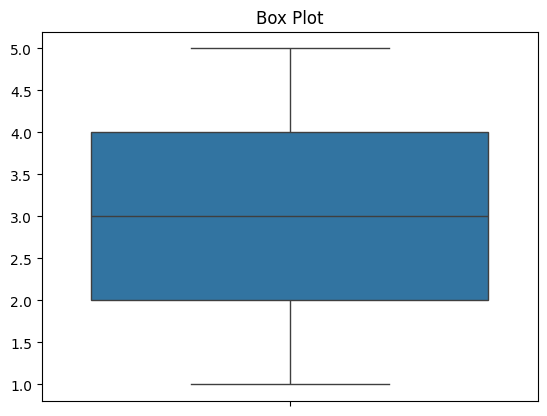
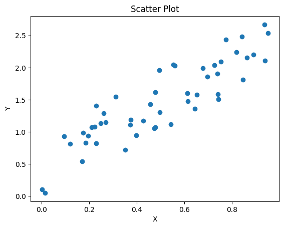
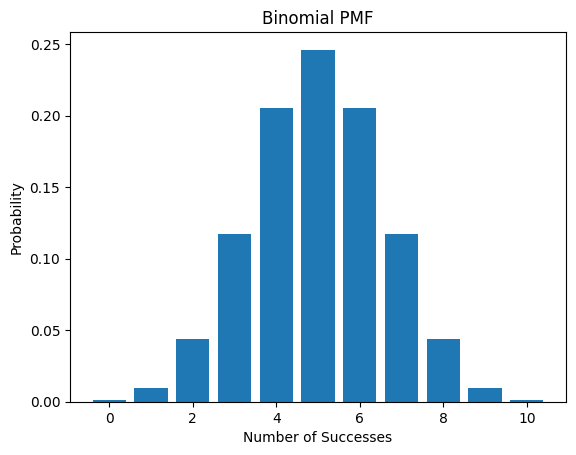
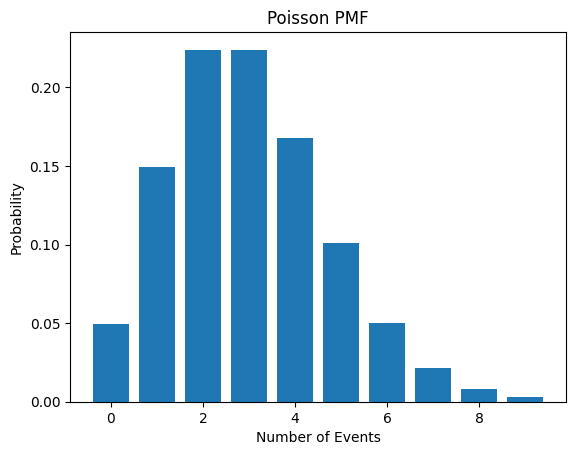
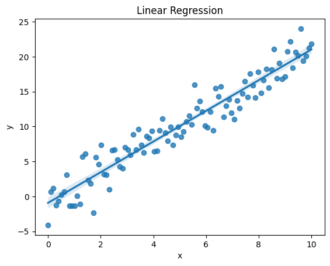
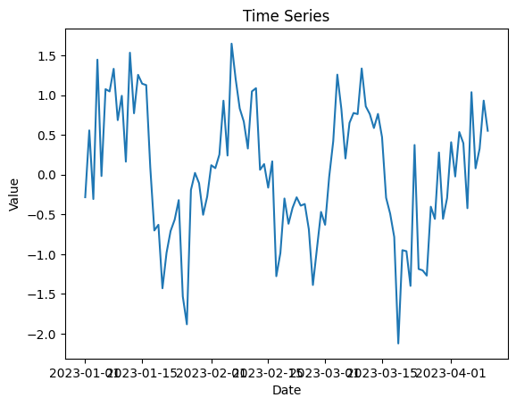
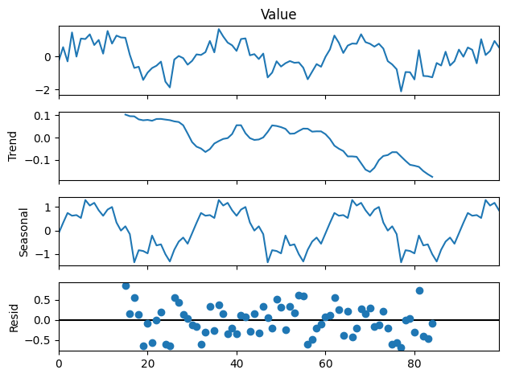

Learning Statistics and Probability with SciPy and Python
Data Science
Author
Fabian
Published
March 21, 2024
Learning Statistics and Probability with SciPy and Python
This Jupyter Notebook provides a comprehensive guide to the fundamentals of statistics and probability, using SciPy and Python for practical implementation and visualization.
I. Introduction
Why Statistics and Probability Matter:
Statistics and probability are crucial for understanding and interpreting data across various fields:
Science: Analyzing experimental results, drawing conclusions, and making predictions.
Business: Understanding market trends, customer behavior, and financial risk.
Everyday Life: Making informed decisions based on data, understanding risk, and interpreting information.
The Role of SciPy:
SciPy (Scientific Python) is a powerful open-source library offering a wide range of scientific computing tools:
Statistical functions: Calculate descriptive statistics, probability distributions, hypothesis tests, and more.
Optimization algorithms: Find optimal solutions to mathematical problems.
Numerical integration and differentiation: Solve calculus problems numerically.
Signal processing: Analyze and manipulate signals.
Python for Visualization:
Python provides excellent libraries for creating insightful visualizations:
Matplotlib: A versatile library for creating static, interactive, and animated visualizations.
Seaborn: Built on Matplotlib, Seaborn provides a high-level interface for creating statistically informative and visually appealing plots.
II. Descriptive Statistics
Data Types and Structures:
Data can be classified into different types:
Numerical: Quantitative data that can be measured (e.g., height, weight, temperature).
Categorical: Qualitative data that can be categorized (e.g., gender, color, city).
Data can be organized in various structures:
Arrays: A collection of elements of the same data type.
DataFrames: A two-dimensional table-like structure with rows and columns.
import numpy as npimport pandas as pd# Create a NumPy arraydata = np.array([1, 2, 3, 4, 5])# Create a Pandas DataFramedf = pd.DataFrame({'Name': ['Alice', 'Bob', 'Charlie'],'Age': [25, 30, 28],'City': ['New York', 'London', 'Paris']})print(data)print(df)
[1 2 3 4 5]
Name Age City
0 Alice 25 New York
1 Bob 30 London
2 Charlie 28 Paris
Measures of Central Tendency:
Measures of central tendency describe the center of a dataset:
Mean: The average of all values. Median: The middle value when the data is sorted. Mode: The most frequent value.
from scipy import stats# Calculate mean, median, and modemean = np.mean(data)median = np.median(data)mode = stats.mode(data)print(f"Mean: {mean}")print(f"Median: {median}")print(f"Mode: {mode[0]}")
Mean: 3.0
Median: 3.0
Mode: 1
Visualize central tendency with histograms and box plots:
import matplotlib.pyplot as pltimport seaborn as sns# Histogramplt.hist(data)plt.title('Histogram')plt.xlabel('Value')plt.ylabel('Frequency')plt.show()# Box plotsns.boxplot(data)plt.title('Box Plot')plt.show()


Measures of Dispersion:
Measures of dispersion describe the spread or variability of a dataset:
Variance: The average squared deviation from the mean. Standard deviation: The square root of the variance. Range: The difference between the maximum and minimum values.
# Calculate variance, standard deviation, and rangevariance = np.var(data)std_dev = np.std(data)data_range = np.ptp(data) # ptp stands for "peak-to-peak"print(f"Variance: {variance}")print(f"Standard Deviation: {std_dev}")print(f"Range: {data_range}")
Variance: 2.0
Standard Deviation: 1.4142135623730951
Range: 4
Visualize dispersion with box plots and scatter plots:
# Generate some random data for scatter plotx = np.random.rand(50)y =2* x + np.random.rand(50)# Scatter plotplt.scatter(x, y)plt.title('Scatter Plot')plt.xlabel('X')plt.ylabel('Y')plt.show()

Correlation and Covariance:
Correlation: Measures the linear relationship between two variables. Covariance: Measures how two variables vary together.
Probability is the branch of mathematics that deals with the likelihood of events occurring. Here are some fundamental concepts:
Probability: A number between 0 and 1 that represents the chance of an event happening. A probability of 0 means the event is impossible, while a probability of 1 means the event is certain. Sample Space: The set of all possible outcomes of an experiment. For example, the sample space of flipping a coin is {Heads, Tails}. Events: A subset of the sample space. For example, getting Heads when flipping a coin is an event.
import random# Simulate flipping a coin 10 timesoutcomes = [random.choice(['Heads', 'Tails']) for _ inrange(10)]print(outcomes)# Count the number of headsnum_heads = outcomes.count('Heads')print(f"Number of heads: {num_heads}")# Estimate the probability of headsprob_heads = num_heads /len(outcomes)print(f"Estimated probability of heads: {prob_heads}")
['Heads', 'Heads', 'Tails', 'Heads', 'Tails', 'Tails', 'Heads', 'Heads', 'Tails', 'Tails']
Number of heads: 5
Estimated probability of heads: 0.5
Probability Distributions:
A probability distribution describes the probability of different outcomes in an experiment. There are two main types:
Discrete Distributions: Deal with discrete random variables, which can only take on a finite number of values.
Bernoulli Distribution: Models the probability of success or failure in a single trial (e.g., flipping a coin once). Binomial Distribution: Models the probability of a certain number of successes in a fixed number of independent trials (e.g., flipping a coin 10 times and getting 5 heads). Poisson Distribution: Models the probability of a certain number of events occurring in a fixed interval of time or space (e.g., the number of cars passing a certain point on a highway in an hour).
from scipy.stats import bernoulli, binom, poisson# Bernoulli distributionp =0.5# Probability of successrv_bernoulli = bernoulli(p)print(f"Bernoulli PMF: {rv_bernoulli.pmf(1)}") # Probability of success (1)# Binomial distributionn =10# Number of trialsrv_binom = binom(n, p)print(f"Binomial PMF: {rv_binom.pmf(5)}") # Probability of 5 successes# Poisson distributionmu =3# Average number of eventsrv_poisson = poisson(mu)print(f"Poisson PMF: {rv_poisson.pmf(2)}") # Probability of 2 events
x_binom = np.arange(0, n +1)plt.bar(x_binom, rv_binom.pmf(x_binom))plt.title('Binomial PMF')plt.xlabel('Number of Successes')plt.ylabel('Probability')plt.show()x_poisson = np.arange(0, 10)plt.bar(x_poisson, rv_poisson.pmf(x_poisson))plt.title('Poisson PMF')plt.xlabel('Number of Events')plt.ylabel('Probability')plt.show()


Continuous Distributions: Deal with continuous random variables, which can take on any value within a given range.
Normal Distribution: A bell-shaped distribution that is commonly used to model many natural phenomena (e.g., height, weight, IQ scores). Exponential Distribution: Models the time between events that happen at a constant average rate (e.g., the time between customer arrivals at a store). Uniform Distribution: All values within a given range are equally likely (e.g., a random number generator that produces numbers between 0 and 1).
from scipy.stats import norm, expon, uniform# Normal distributionmu =0# Meansigma =1# Standard deviationrv_norm = norm(mu, sigma)print(f"Normal PDF: {rv_norm.pdf(1)}") # Probability density at x = 1# Exponential distributionlambda_ =1# Rate parameterrv_expon = expon(scale=1/lambda_)print(f"Exponential PDF: {rv_expon.pdf(1)}")# Uniform distributiona =0# Lower boundb =1# Upper boundrv_uniform = uniform(a, b)print(f"Uniform PDF: {rv_uniform.pdf(0.5)}")
Normal PDF: 0.24197072451914337
Exponential PDF: 0.36787944117144233
Uniform PDF: 1.0
Conditional Probability: The probability of an event happening given that another event has already occurred. Independence: Two events are independent if the occurrence of one does not affect the probability of the other. Bayes’ Theorem: A way to update the probability of an event based on new evidence.
# Example: Two events A and Bp_a =0.3# Probability of Ap_b =0.4# Probability of Bp_b_given_a =0.5# Probability of B given A# Calculate P(A|B) using Bayes' Theoremp_a_given_b = (p_b_given_a * p_a) / p_bprint(f"P(A|B): {p_a_given_b}")
P(A|B): 0.37499999999999994
Inferential Statistics Inferential statistics allows us to draw conclusions about a population based on a sample of data. It involves using sample data to estimate population parameters and test hypotheses.
Sampling and Estimation:
Sampling: The process of selecting a subset of individuals from a population. Different sampling methods include:
Random sampling: Every member of the population has an equal chance of being selected. Stratified sampling: The population is divided into subgroups (strata), and random samples are taken from each stratum. Cluster sampling: The population is divided into clusters, and a random sample of clusters is selected. Estimation: The process of using sample data to estimate population parameters.
Point estimate: A single value that estimates a population parameter (e.g., sample mean as an estimate of population mean). Confidence interval: A range of values that is likely to contain the population parameter with a certain level of confidence (e.g., a 95% confidence interval).
from scipy.stats import t# Sample datadata = np.random.normal(loc=50, scale=10, size=100) # Generate random data from a normal distribution# Calculate sample mean and standard deviationsample_mean = np.mean(data)sample_std = np.std(data, ddof=1) # Use ddof=1 for sample standard deviation# Calculate 95% confidence intervalconfidence_level =0.95alpha =1- confidence_leveldegrees_of_freedom =len(data) -1t_critical = t.ppf(1- alpha/2, degrees_of_freedom) # Get t-critical valuemargin_of_error = t_critical * sample_std / np.sqrt(len(data))confidence_interval = (sample_mean - margin_of_error, sample_mean + margin_of_error)print(f"Sample Mean: {sample_mean}")print(f"95% Confidence Interval: {confidence_interval}")
Hypothesis testing is a process for evaluating evidence against a claim about a population.
Null hypothesis (H0): The claim being tested, usually stating that there is no effect or difference. Alternative hypothesis (H1 or Ha): The opposite of the null hypothesis, stating that there is an effect or difference. Type I error: Rejecting the null hypothesis when it is actually true (false positive). Type II error: Failing to reject the null hypothesis when it is actually false (false negative).
from scipy.stats import ttest_1samp# One-sample t-testpopulation_mean =55# Hypothesized population meant_statistic, p_value = ttest_1samp(data, population_mean)print(f"T-statistic: {t_statistic}")print(f"P-value: {p_value}")# Interpret results: Compare p-value to a significance level (e.g., 0.05)# If p-value < significance level, reject the null hypothesis.
Regression analysis is used to model the relationship between a dependent variable and one or more independent variables.
Linear regression: Models a linear relationship between variables. Assumptions: Linearity, independence, homoscedasticity, normality of residuals.
import statsmodels.formula.api as sm# Sample datax = np.linspace(0, 10, 100)y =2* x + np.random.normal(scale=2, size=100)# Create a DataFramedf_regression = pd.DataFrame({'x': x, 'y': y})# Fit linear regression modelmodel = sm.ols('y ~ x', data=df_regression).fit()print(model.summary())# Visualize regression line and residualssns.regplot(x='x', y='y', data=df_regression)plt.title('Linear Regression')plt.show()
OLS Regression Results
==============================================================================
Dep. Variable: y R-squared: 0.918
Model: OLS Adj. R-squared: 0.917
Method: Least Squares F-statistic: 1101.
Date: Sat, 04 Jan 2025 Prob (F-statistic): 4.21e-55
Time: 20:09:16 Log-Likelihood: -206.62
No. Observations: 100 AIC: 417.2
Df Residuals: 98 BIC: 422.5
Df Model: 1
Covariance Type: nonrobust
==============================================================================
coef std err t P>|t| [0.025 0.975]
------------------------------------------------------------------------------
Intercept -0.9313 0.383 -2.431 0.017 -1.692 -0.171
x 2.1964 0.066 33.187 0.000 2.065 2.328
==============================================================================
Omnibus: 0.348 Durbin-Watson: 1.824
Prob(Omnibus): 0.840 Jarque-Bera (JB): 0.504
Skew: 0.108 Prob(JB): 0.777
Kurtosis: 2.728 Cond. No. 11.7
==============================================================================
Notes:
[1] Standard Errors assume that the covariance matrix of the errors is correctly specified.

V. Advanced Topics (Optional) This section introduces some advanced topics in statistics and probability that you can explore further based on your interests and goals.
Bayesian Statistics:
Bayesian Inference: An alternative approach to statistical inference that uses Bayes’ Theorem to update prior beliefs about a population parameter based on observed data, resulting in a posterior distribution. Prior Distribution: Represents prior knowledge or beliefs about the parameter before observing any data. Posterior Distribution: Represents updated beliefs about the parameter after observing data.
# # This requires installing pymc3: !pip install pymc3# import pymc3 as pm# # Example: Estimating the probability of heads in a coin flip# data = np.array([1, 1, 0, 1, 0, 0, 1, 1, 1, 0]) # 1 represents heads, 0 represents tails# with pm.Model() as model:# # Prior distribution for p (probability of heads)# p = pm.Beta('p', alpha=1, beta=1) # Uniform prior# # Likelihood function (Bernoulli distribution)# likelihood = pm.Bernoulli('likelihood', p=p, observed=data)# # Inference# trace = pm.sample(2000, tune=1000)# # Analyze posterior distribution# pm.traceplot(trace)# plt.show()# pm.summary(trace)
---------------------------------------------------------------------------ModuleNotFoundError Traceback (most recent call last)
Cell In[23], line 2 1# This requires installing pymc3: !pip install pymc3----> 2importpymc3aspm 4# Example: Estimating the probability of heads in a coin flip 5 data = np.array([1, 1, 0, 1, 0, 0, 1, 1, 1, 0]) # 1 represents heads, 0 represents tailsModuleNotFoundError: No module named 'pymc3'
Time Series Analysis:
Time series analysis deals with data collected over time. It involves identifying patterns, trends, and seasonality in the data.
Time Series Decomposition: Separating a time series into its components: trend, seasonality, and residuals. Forecasting: Predicting future values based on past patterns.
# Sample time series datadates = pd.date_range('2023-01-01', periods=100, freq='D')data = np.sin(2* np.pi * np.arange(100) /30) + np.random.normal(scale=0.5, size=100)df_time_series = pd.DataFrame({'Date': dates, 'Value': data})# Plot time seriesplt.plot(df_time_series['Date'], df_time_series['Value'])plt.title('Time Series')plt.xlabel('Date')plt.ylabel('Value')plt.show()# Decompose time series (requires statsmodels)from statsmodels.tsa.seasonal import seasonal_decomposeresult = seasonal_decompose(df_time_series['Value'], model='additive', period=30)result.plot()plt.show()


Machine Learning:
Machine learning uses algorithms to learn patterns from data and make predictions or decisions.
Classification: Assigning data points to categories (e.g., spam detection, image recognition). Clustering: Grouping data points into clusters based on similarity (e.g., customer segmentation).
from sklearn.linear_model import LogisticRegressionfrom sklearn.model_selection import train_test_split# Sample data for classificationX = np.random.rand(100, 2)y = (X[:, 0] + X[:, 1] >1).astype(int)# Split data into training and testing setsX_train, X_test, y_train, y_test = train_test_split(X, y, test_size=0.2)# Train a logistic regression modelmodel = LogisticRegression()model.fit(X_train, y_train)# Make predictions on the test sety_pred = model.predict(X_test)# Evaluate model performanceaccuracy = model.score(X_test, y_test)print(f"Accuracy: {accuracy}")
These advanced topics provide a glimpse into the broader world of statistics and probability. There are many other areas to explore, such as survival analysis, spatial statistics, and stochastic processes.
Conclusion Summary of Key Concepts:
This notebook covered fundamental concepts in statistics and probability, including:
Descriptive statistics: Measures of central tendency, dispersion, and correlation. Probability: Basic concepts, probability distributions, conditional probability, and Bayes’ Theorem. Inferential statistics: Sampling, estimation, hypothesis testing, and regression analysis. Advanced topics: Bayesian statistics, time series analysis, and machine learning.